Virtual desktops
A virtual desktop is a virtualized computing environment with a graphical user interface (GUI) easily accessible through a web browser. A group of students can use preconfigured virtual desktops (virtual classroom) in a similar way as a physical classroom but with more flexibility as it can be accessed from home and at any time. High-performance server infrastructure hosting virtual classrooms can provide better computing capabilities for highly demanding simulation software.
Access
Virtual desktops as part of HPC offering are available through Waldur resourse reservation portal: https://nohap.hpc-net.lv/
Please start by clicking on [Sign in with RTU HPC]

By selecting the MyAccessID method, you should be able to authenticate with your university login details or eEIDAS (eParaksts for Latvian citizens).

In MyAccessID window under “Login with” search for your university’s identity provider.

In case of the Riga Technical University, select identity provider “Riga Technical University (Office 365)”.

Similar to University of Latvia

and Riga Stradiņš University

You will be redirected to your organizations identity provider authorization portal, in this case RTU ORTUS. Please follow all authentication steps begining with your login:

Later confirm authentication by scrolling down MyaccessID warning message:
After successful authentication you will be asked to confirm[ACCEPT] you name and email in Waldur system profile:

Invite members to project
In order to invite participants to the Project/Study course you must have at least Manager role in this Project.
Follow these steps to get to invitation form:

Then fill invitation form with members’ email address[4.] and propper role[5.] in project - “member” in this case.
With + button you can add additional participants to this invitation session.

Last activity is to add custom message to invitation email, then submit[9.] to finish invitation procedure.

Requesting a Virtual destkop
To deploy pre-configured virtual machine with remote desktop access:
go to Marketplace
and select Virtual Desktops section
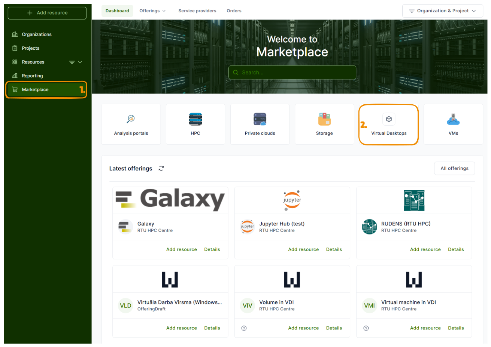
chose ‘Virtuala Darba Virsma’ offering
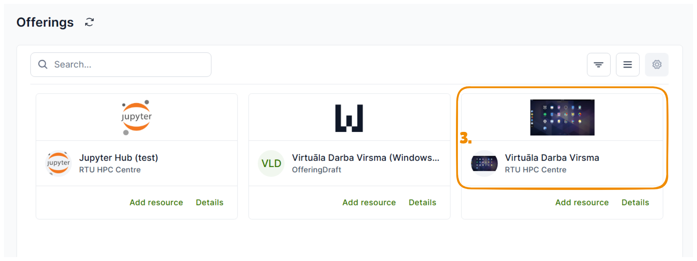
Then [Deploy]
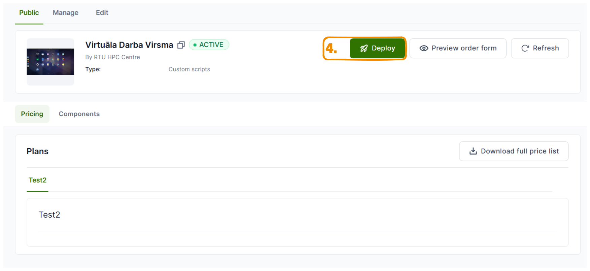
specify Organisation and Project under which you are intended to use chosen resource
inside image dropdown list you will see multiple options of images:
“UbuntuDesktop_raw” will be default clean Ubuntu 22 image with Remote Desktop access
number specified at the end of image file name *_60_raw or *_40G_raw sugests minimal Volume size required for Image
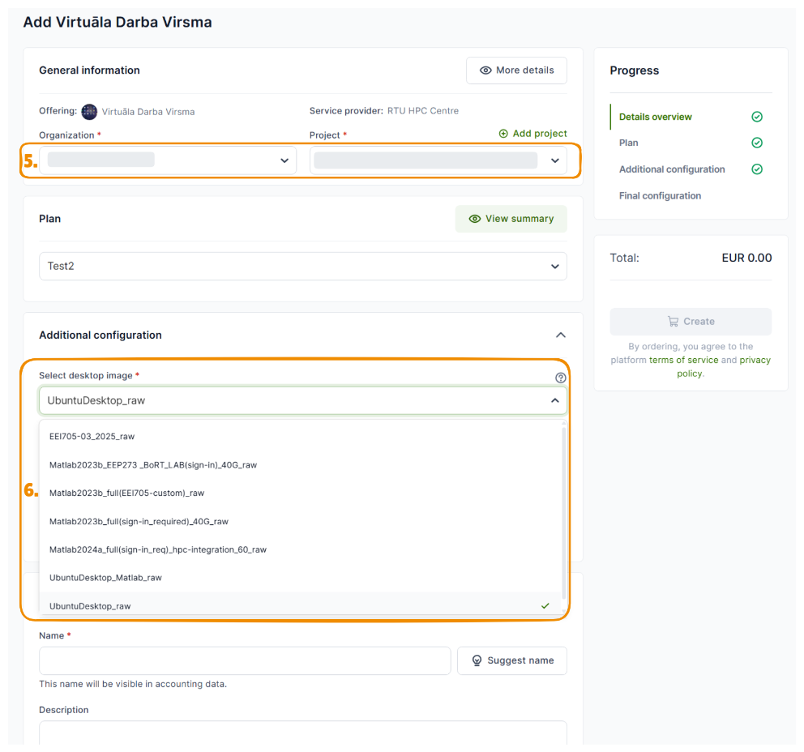
Select required flavor for vCPUs and RAM and disk size of a Volume
Create custom name of a resource.
We suggest to use name or initials, because it would be easyer to locate if in case of troubleshooting procedure if needed. Or push [Suggest name] button
Start creation process of a resource
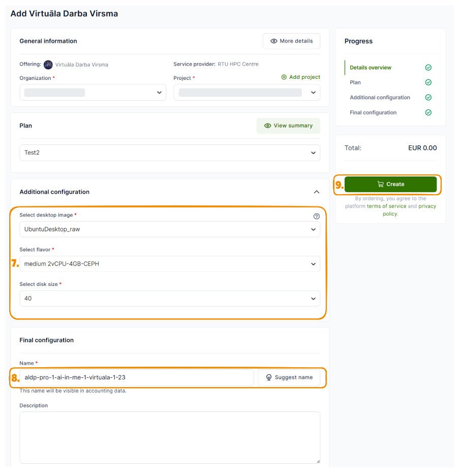
This is deployment sequence status bar, to update it…
…press Refresh
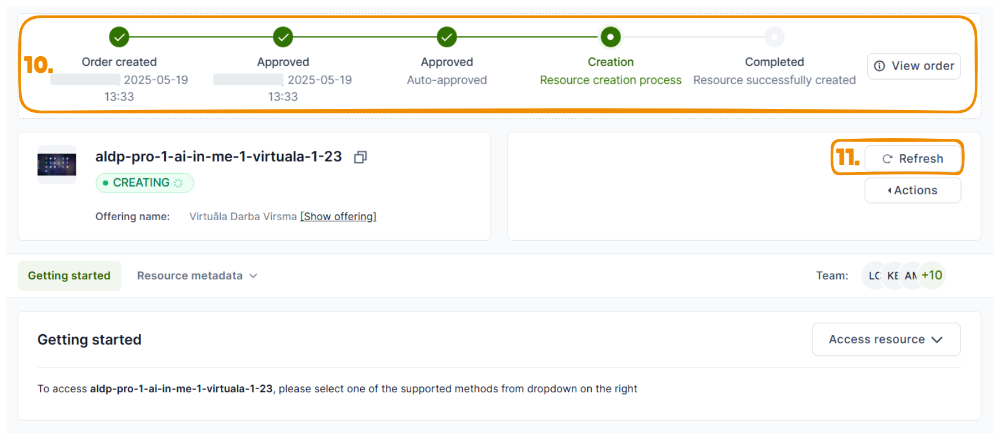
After deployment is successfull, you will be able to access your resource by clicking on Access resource or going directly to Access URL
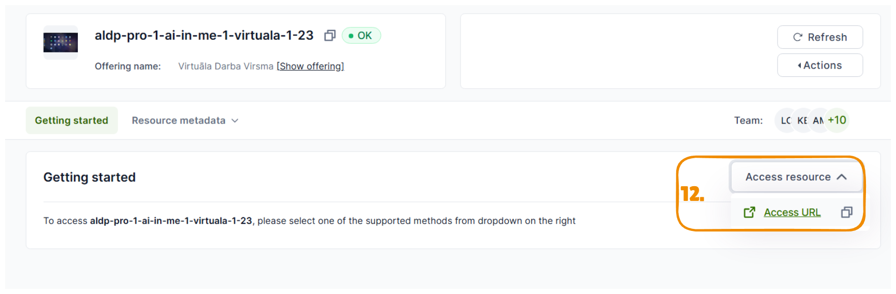
Requesting a Virtual destkop (demonstration)
The following videos are in Latvian.
Configure HPC connection from the virtual desktop
Once your virtual desktop is running, you can connect it to the HPC cluster (supercomputer) with a single click. The Configure HPC helper is preinstalled on every virtual desktop image and takes care of:
generating an SSH key pair on the virtual desktop and uploading the public key to your Waldur account so the cluster recognises you,
discovering your cluster login name from your active allocation,
mounting your HPC home directory on the desktop as the HPC data folder, and
placing a one-click SSH to HPC launcher on the desktop.
You only need to run it once per virtual desktop. Re-run it any time you rotate your Waldur API token or your HPC access is reset.
Before you start
You are signed in to the virtual desktop through the browser (https://desktop.hpc-net.lv).
You can sign in to Waldur at https://nohap.hpc-net.lv with the same identity you used to deploy the virtual desktop.
You have an active HPC allocation. Configure HPC does not create an HPC account for you — it only configures this virtual desktop to use one that already exists. Your Waldur project must already contain an active RTU HPC (RUDENS) allocation; if it does not, request one first as described in Request HPC resource (allocation). Running Configure HPC without an allocation will fail with an error.
Steps
On the virtual desktop, locate the Configure HPC icon on the left side of the desktop and double-click it.
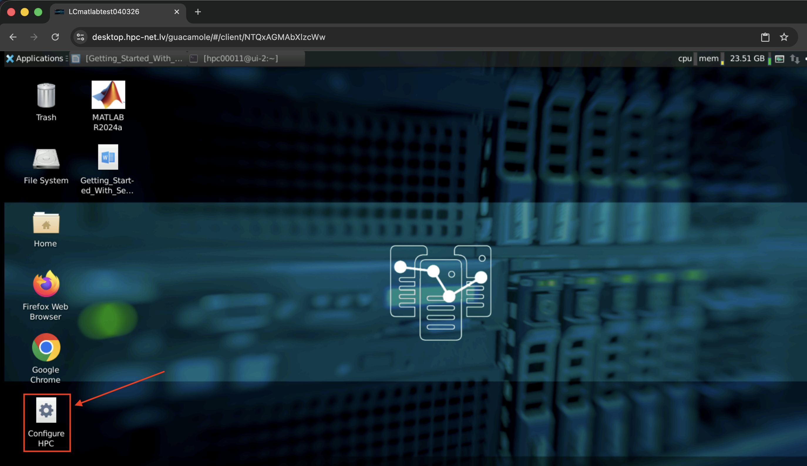
Note: If there is no Configure HPC icon on the desktop, then the virtual desktop template you selected does not support autoconfiguration. Either redeploy the virtual desktop from a template that supports it (see To deploy pre-configured virtual machine with remote desktop access) or follow the manual SSH access steps instead.
A terminal window opens and prompts you for your Waldur API token:
Copy API token from WALDUR (https://nohap.hpc-net.lv) user Dashboard ENTER API token:
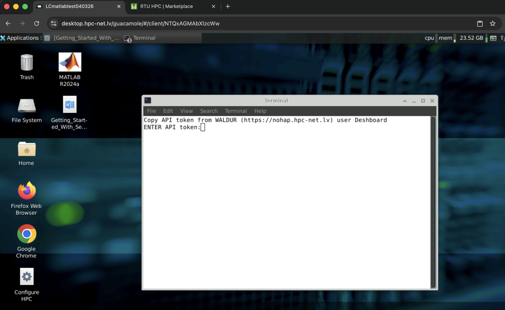
Leave that terminal open and switch to a browser tab with Waldur (https://nohap.hpc-net.lv). Click your profile picture in the top-right corner, then click the Copy button next to API token. The token is now in your clipboard.
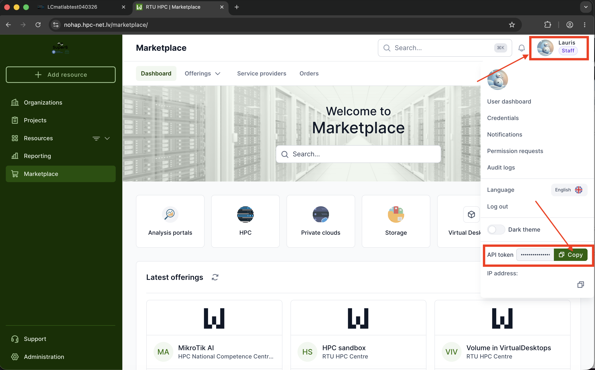
Note: Treat the API token like a password — anyone with this token can act on your behalf in Waldur. If you suspect it has leaked, regenerate it from the same dashboard and re-run Configure HPC.
Return to the virtual desktop, click inside the terminal, paste the token (Ctrl + Shift + V in the desktop terminal, or right-click → Paste) and press Enter.
The script runs for a few seconds. When it finishes you will see a confirmation similar to:
HPC connection ready!!! ############################## Your cluster login name: hpcXXXX Connect to the cluster by: 1. Clicking on 'SSH to HPC' on the Desktop, or 2. executing in Terminal: ssh hpcXXXX@xx.hpc.rtu.lv
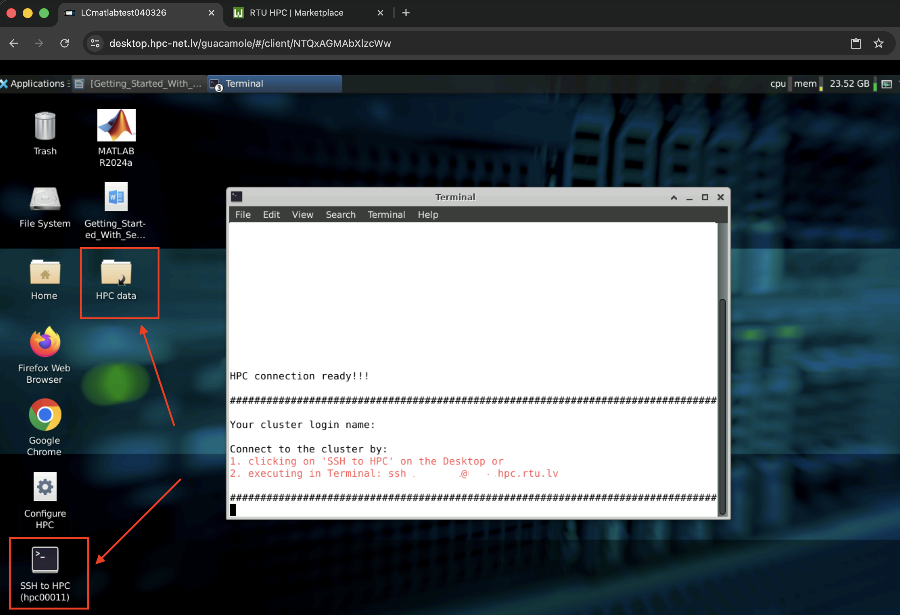
After running
Two new items appear on your desktop:
HPC data — a shortcut to your home directory on the cluster. Open it in the file manager to browse, drag-and-drop, and edit files on the HPC directly from the virtual desktop.
SSH to HPC (hpcXXXX) — a one-click launcher that opens a terminal already logged in to the cluster as your user. The number in parentheses is your personal cluster login name.
You can also connect from any terminal on the virtual desktop with:
ssh <your-login>@xx.hpc.rtu.lv
No password is required — the SSH key generated by Configure HPC is used automatically.
Using Configure HPC on your own machine
The steps above apply to virtual desktops where Configure HPC is already preinstalled. If you would like to deploy and run the same helper on your own workstation (Linux or macOS), the source code and installation instructions are available in the project repository:
https://github.com/rtuhpc/configureHPC
The prerequisites (active RTU HPC (RUDENS) allocation and a valid Waldur API token) and the resulting behaviour are the same as described above.
Troubleshooting
No active HPC allocation found / allocation error — your Waldur project does not yet have an active RTU HPC (RUDENS) allocation, so the script has nothing to configure against. Request an allocation as described in Request HPC resource (allocation), wait for it to be approved, then re-run Configure HPC.
“Invalid API token” — the value pasted into the terminal is missing characters or has been regenerated in Waldur. Copy the token again from the Waldur user dashboard and re-run Configure HPC.
“Connection refused” / “Permission denied” when using
ssh— make sure Configure HPC has been run on this specific virtual desktop. Each virtual desktop has its own SSH key, so a desktop redeployed from scratch needs to run the helper again. Also note that after Configure HPC uploads the key to Waldur it can take a few minutes for the cluster to pick it up.No HPC data or SSH to HPC icons on the desktop — the script did not finish successfully. Re-run Configure HPC and watch the terminal output for error messages.